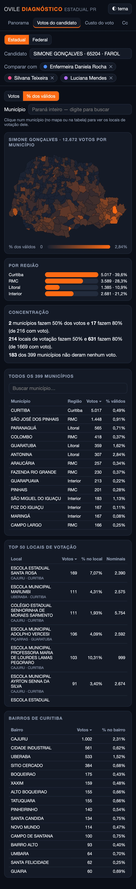
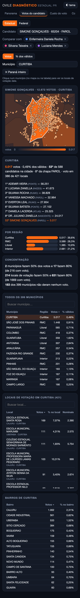
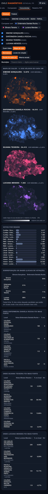
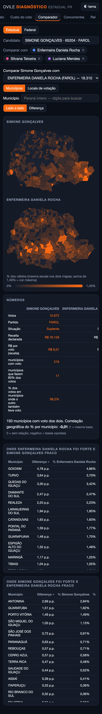

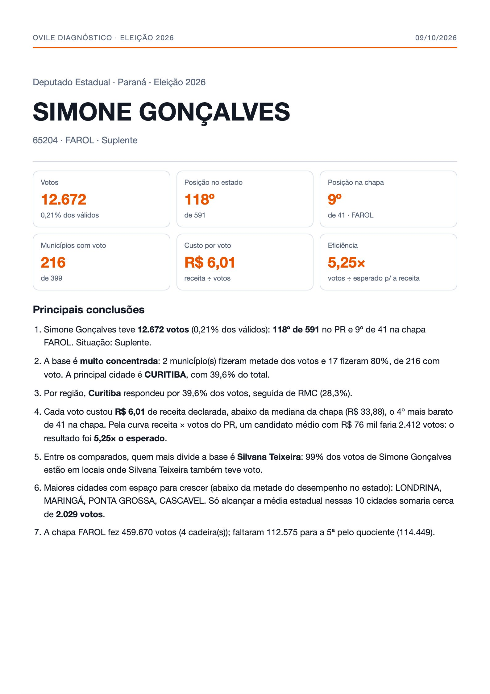

OVILE DIAGNÓSTICO
Do estadointeiro…
…até cadalocal de votação.
Cidade, bairro,escola.
Quem disputao seu eleitor?
Comparemapa a mapa.
Quanto custoucada voto?
E um relatóriopronto para o partido.
9:41






399municípios no mapa
4.815locais de votação
53ºlugar na capital,
com o ranking da cidade
386locais com voto
só em Curitiba
até 3concorrentes,
de qualquer partido
99%da base dividida
com a maior rival
193cidades em disputa
direta, uma a uma
R$ 6,01por voto, contra
R$ 33,88 da chapa
5,25×mais votos que o
esperado pelo dinheiro
+2.029votos possíveis
em 10 cidades
5 páginasem PDF, prontas
para apresentar
OVILE DIAGNÓSTICO
Sua eleição,
voto a voto.
diagnostico.ovile.com.br